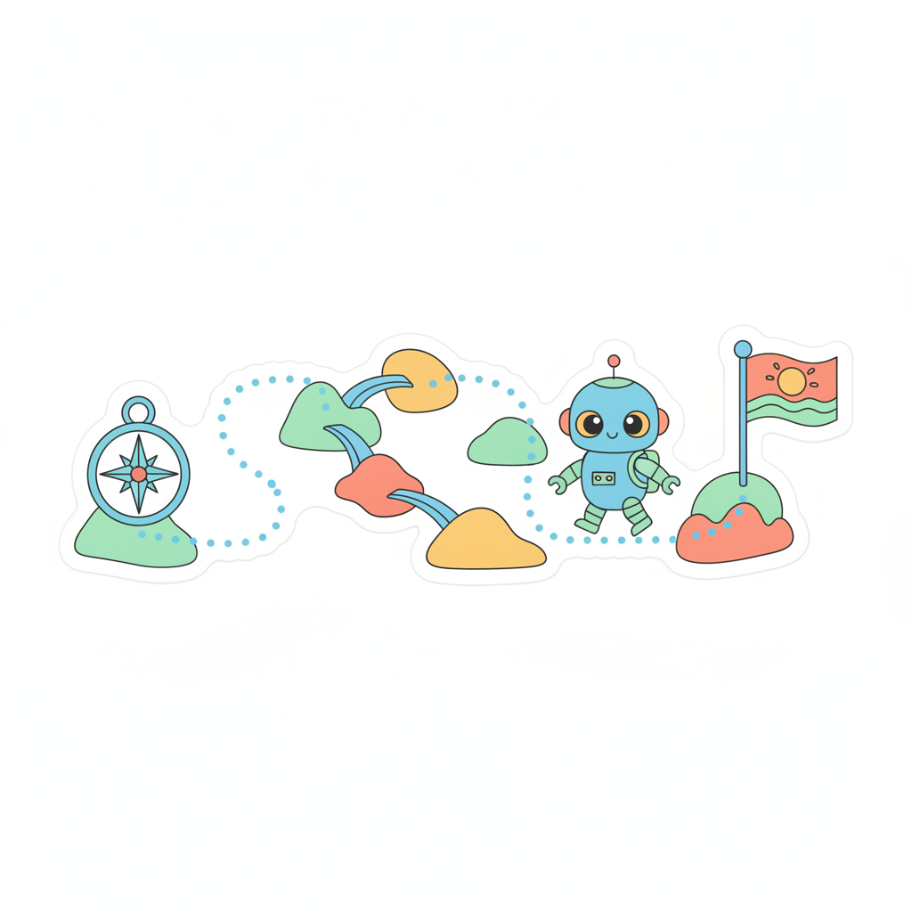

교재의 QR로 연결되는 강별 체험이에요. 배우는 AI 기능을 직접 만져 봐요.

소리의 크기만 재는 것과 말의 내용을 알아듣는 것(STT)을 비교해요.
🐱16강얼굴 위치(X·Y 좌표)를 찾아 스티커가 따라다녀요. 탐지 vs 식별도 비교해요.
🚪17강가상 얼굴 카드의 특징값을 비교해 유사도와 기준값으로 문을 열어요.
🎧18강일기 속 감정 단서를 찾아 분류하고 음악 분위기를 추천받아요.
🎨20강대상·행동·스타일을 구체적으로 고르면 마스코트가 달라져요.
📰21강AI 초안에서 사실 오류와 과장 표현을 찾아 기사로 고쳐요.
🕵️22강AI가 자신 있게 말한 상식 카드를 근거 자료와 비교해 판정해요.
📦23강카메라 속 물건을 찾아 박스와 이름을 붙여요. 한계도 관찰해요.
⚖️24강전체 점수에 가려진 편향을 찾고 데이터를 골고루 모아 고쳐요.
🏅25강배지 퀴즈를 통과하고 나만의 라이선스를 발급받아요.
19강(창의성 조절)은 구글 AI 스튜디오에서 직접 체험해요. · 카메라·마이크는 화면에만 쓰이고 저장되지 않아요.